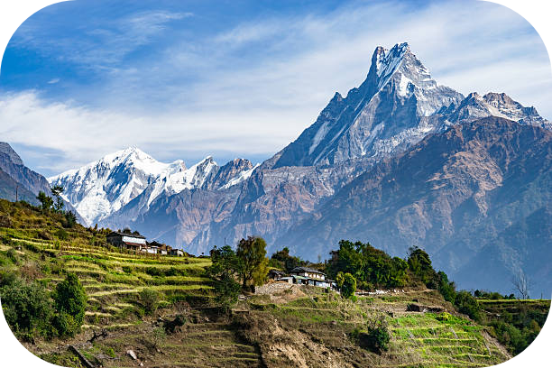
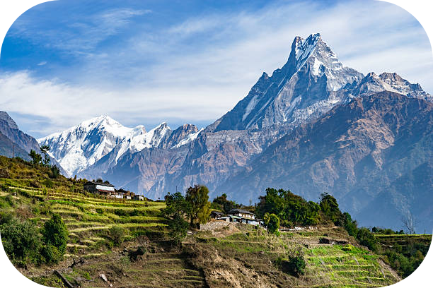
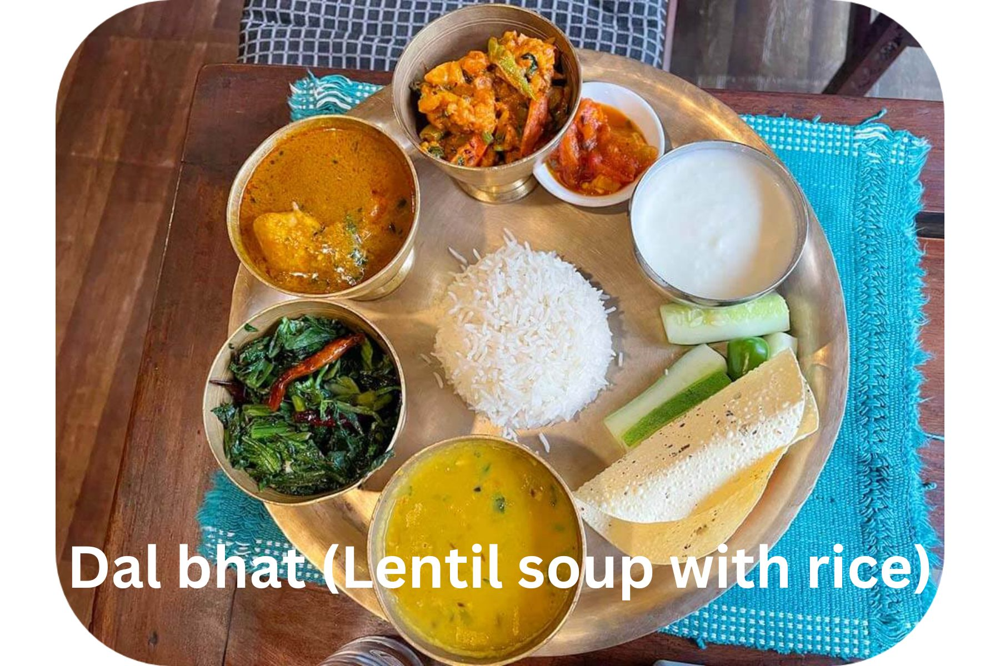

{kind=link}

My YouTube channel
Nepal is a beautiful country in South Asia, known for its diverse landscape and rich cultural heritage. The country is home to many beautiful cities, each with its own unique charm and attractions. Visitors can explore historic sites, enjoy delicious local cuisine, and experience the warm hospitality of the Nepali people.
Nepal is also known for its stunning natural beauty, including majestic mountains, pristine lakes, and lush green forests. Visitors can take part in a wide range of outdoor activities, such as trekking, hiking, and mountain climbing, and enjoy breathtaking views of the Himalayas.

 

Nepal has a rich cultural heritage and is home to diverse ethnic groups, languages, and religions. The majority of the population practices Hinduism, followed by Buddhism, Islam, and other religions. Nepali is the official language, but various regional languages are also spoken.The country has a unique blend of ancient traditions and modern influences. Kathmandu, the capital city, is a vibrant hub that showcases a mix of old palaces, temples, and modern infrastructure. The Kathmandu Valley, a UNESCO World Heritage site, contains several culturally significant sites.
Nepal's economy heavily relies on agriculture, tourism, and remittances from Nepali workers abroad. The country is known for its trekking and mountaineering opportunities, attracting adventurers from around the world. Popular trekking destinations include the Annapurna Circuit, Langtang Valley, and the Everest Base Camp.
Despite its natural beauty and cultural richness, Nepal faces challenges such as poverty, inadequate infrastructure, and political instability. Efforts are being made to address these issues and promote sustainable development.
 Nepal is also known for its festivals, such as Dashain, Tihar, and Holi, which showcase vibrant celebrations and religious rituals. The country's cuisine features a variety of flavors, with dishes like momo (dumplings), dal bhat (lentil soup with rice), and gundruk (fermented leafy greens) being popular. The towering peaks of Nepal, including Mount Everest, attract climbers and trekkers from around the world. The Annapurna and Langtang regions also offer stunning trekking routes with awe-inspiring views.
The people of Nepal are diverse, with various ethnic groups and languages. Hinduism and Buddhism are the prominent religions, and their influence can be seen in the numerous temples, monasteries, and sacred sites spread across the country.
The capital city, Kathmandu, is a bustling metropolis that blends ancient traditions with modern developments. The narrow alleys of its old town, lined with intricately carved buildings and bustling bazaars, create a vibrant atmosphere.
Nepal's cuisine is flavorful and diverse, with dishes like momo, dal bhat, and gundruk ko achar (fermented leafy greens) tantalizing the taste buds. Tea culture is also significant, with traditional teas like chiya and butter tea being popular. Nepal celebrates a multitude of festivals throughout the year. Dashain, Tihar, and Holi are some of the most important and vibrant festivals, filled with music, dancing, and colorful celebrations.
Despite its natural beauty and cultural wealth, Nepal faces challenges such as poverty and inadequate infrastructure. However, the country is resilient and committed to sustainable development, seeking to preserve its natural resources and promote responsible tourism.
In summary, Nepal is a captivating country nestled in the Himalayas, renowned for its majestic mountains, cultural diversity, and spiritual heritage. It offers a unique blend of adventure, tranquility, and exploration for visitors and locals alike.
My YouTube channel
© 2023 Harshit Mahato. All rights reserved.